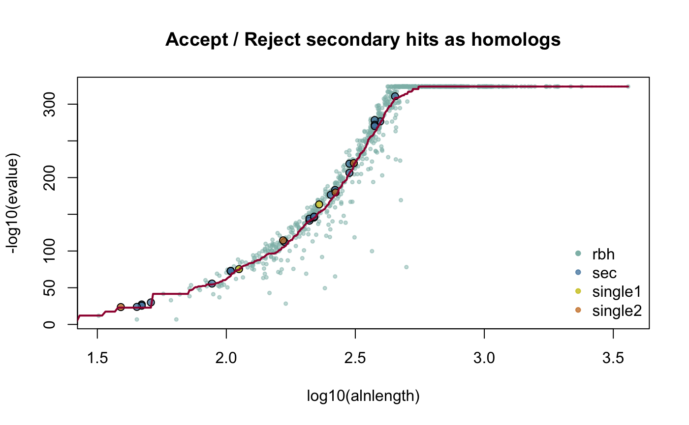
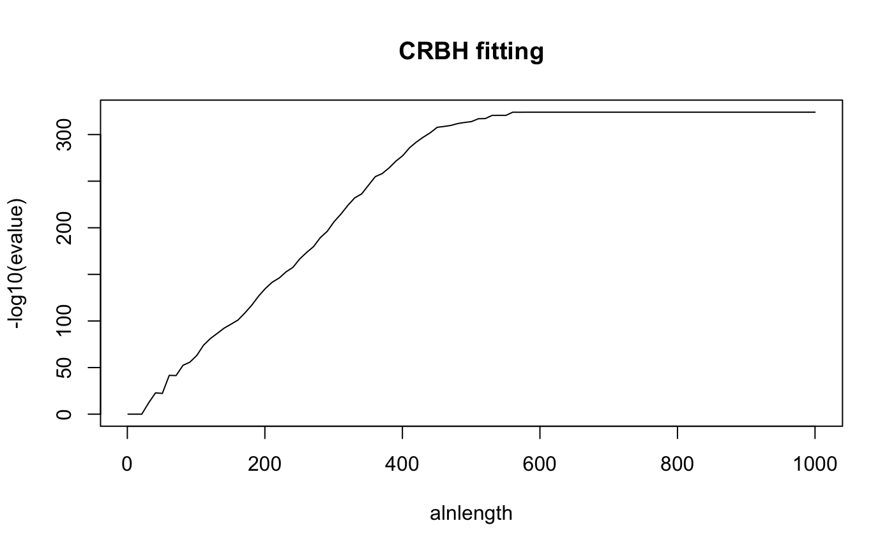
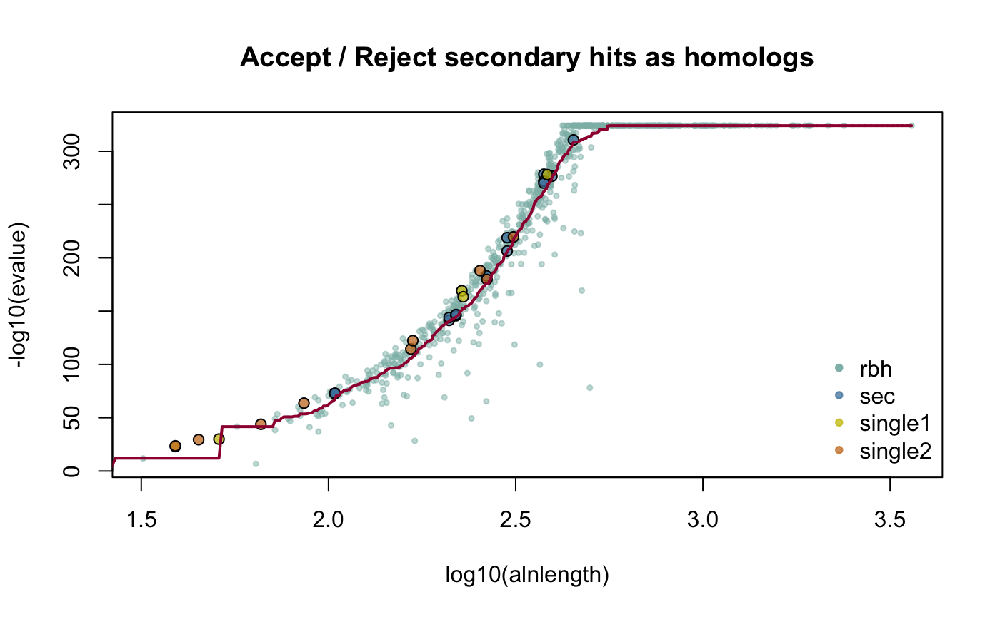
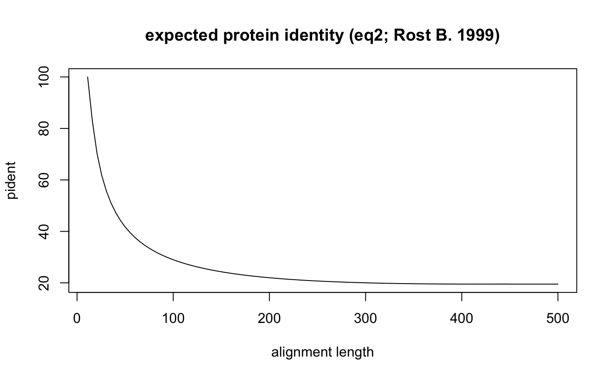
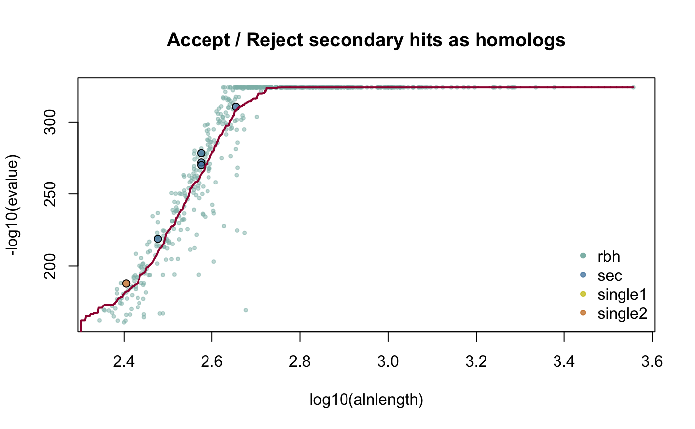

CRBHits Basic Vignette
Kristian K Ullrich
2020-05-16
Source:vignettes/CRBHitsBasicVignette.Rmd
CRBHitsBasicVignette.RmdTable of Contents
CRBHits is a reimplementation of the Conditional Reciprocal Best Hit algorithm crb-blast in R.
1. Quick Installation
see here for the R package pages and a detailed description of the install process https://mpievolbio-it.pages.gwdg.de/crbhits/
#see a detailed description of installation prerequisites at
#https://mpievolbio-it.pages.gwdg.de/crbhits/
library(devtools)
#from gitlab
install_gitlab("mpievolbio-it/crbhits", host = "https://gitlab.gwdg.de",
build_vignettes = TRUE, dependencies = FALSE)
#from github
install_github("kullrich/CRBHits", build_vignettes = TRUE, dependencies = FALSE)CRBHits needs LAST and KaKs_Calculator2.0 to be installed before one can eficiently use it.
Both prerequisites (LAST, KaKs_Calculator2.0) are forked within CRBHits and can be compiled for Linux/Unix/macOS wiht the functions make.last() and make.KaKs_Calculator2().
library(CRBHits)
#compile last-1060
make.last()
#compile KaKs_Calculator2.0
make.KaKs_Calculator2()Note:
In this Vignette the lastpath is defined as vignette.paths[1] and the kakscalcpath as vignette.paths[2] to be able to build the Vignette.
However, once you have compiled last-1060 and KaKs_Calculator2.0 with the functions make.last() and make.KaKs_Calculator2() you won’t need to specify the paths anymore. Please remove them if you would like to repeat the examples.
2. Conditional Reciprocal Best Hits
CRBHits is a reimplementation of the Conditional Reciprocal Best Hit algorithm crb-blast in R.
2.1 Conditional Reciprocal Best Hits - Algorithm
The algorithm was introduced by Aubry S, Kelly S et al. (2014) and ported to python shmlast (Scott C. 2017) which benefits from the blast-like sequence search software LAST (Kiełbasa SM et al. 2011).
The CRBH algorithm builds upon the classical reciprocal best hit (RBH) approach to find orthologous sequences between two sets of sequences by defining an expect-value cutoff per alignment length. Further, this cutoff is used to retain secondary hits as additional bona-fide homologs.
CRBHits only takes coding nucleotide sequences as the query and target inputs.
Why? Because CRBHits is implemented to use the same input afterwards to calculate synonymous and nonsynonymous substitutions which must match the protein sequences used during the conditional reciprocal best hit step.
2.2 Coding Sequences Input
One can either use raw or gzipped coding sequences fasta files as inputs with the cdsfile2rbh() function or use a vector from the R package with the cds2rbh() function.
CRBHits uses either the function cdsfile2aafile() to translate a coding sequence fasta file into its corresponding protein sequence fasta file or cds2aa() to translate a into a . Thereby it removes all sequences that are not a multiple of three which can not be parsed corecctly.
Note: The user can easily check if all coding sequences would be a multiple of three or rely on the input files generated by other sources.
library(CRBHits) #compile LAST and KaKs_Calculator2.0 for the vignette vignette.paths <- make.vignette() #example how to check coding sequences if all are a mutiple of three #cdsfile <- paste0(system.file(package = "CRBHits"), "/fasta/ath.cds.fasta.gz") cdsfile <- system.file("fasta", "ath.cds.fasta.gz", package = "CRBHits") cds <- Biostrings::readDNAStringSet(cdsfile) #the following statement should return TRUE, if all sequences are a mutiple of three any(Biostrings::width(cds) %% 3 == 0) #> [1] TRUE
The blast-like software LAST is used to compare the translated coding sequences against each other and output a blast-like output table including the query and target length.
2.3 cds2rbh Function
Like shmlast, CRBHits plots the fitted model of the conditional reciprocal best hit evalue based algorithm.
#example how to get crbh from two coding fasta files #cdsfile1 <- paste0(system.file(package = "CRBHits"), "/fasta/ath.cds.fasta.gz") cdsfile1 <- system.file("fasta", "ath.cds.fasta.gz", package = "CRBHits") #cdsfile2 <- paste0(system.file(package = "CRBHits"), "/fasta/aly.cds.fasta.gz") cdsfile2 <- system.file("fasta", "aly.cds.fasta.gz", package = "CRBHits") cds1 <- Biostrings::readDNAStringSet(cdsfile1) cds2 <- Biostrings::readDNAStringSet(cdsfile2) #the following function calculates crbh matrix using one thread and plots the fitted curve ath_aly_crbh <- cds2rbh(cds1, cds2, plotCurve = TRUE, lastpath = vignette.paths[1])

summary(ath_aly_crbh) #> Length Class Mode #> crbh.pairs 2 data.frame list #> crbh1 16 data.frame list #> crbh2 16 data.frame list #> rbh1_rbh2_fit 1 -none- function
Classical RBH can be performed by disabeling the crbh @paramof the cds2rbh() or cdsfile2rbh() function.
#example how to perform classical rbh ath_aly_rbh <- cds2rbh(cds1, cds2, crbh = FALSE, lastpath = vignette.paths[1])
Both, cdsfile2rbh() and cds2rbh() function, return a list of three data.frame’s which contain the conditional reciprocal best hit pairs ($crbh.pairs) retained, the query > target blast-like output matrix ($crbh1) and the target > query blast-like output matrix ($crbh2). For each matrix the $rbh_class indicates if the hit is a reciprocal best hit (rbh) or if it is a secondary hit retained because of crbh (sec).
#show dimension and first retained hit pairs dim(ath_aly_crbh$crbh.pairs) #> [1] 798 2 head(ath_aly_crbh$crbh.pairs) #> aa1 aa2 #> 1 AT1G01010.1 AL1G11530.t1 #> 2 AT1G01020.5 AL1G11510.t1 #> 3 AT1G01030.1 AL1G11500.t1 #> 4 AT1G01040.1 AL1G11480.t1 #> 5 AT1G01050.1 AL1G11470.t1 #> 6 AT1G01060.6 AL1G11460.t1 #show first retained hit pairs for the query > target matrix head(ath_aly_crbh$crbh1) #> query_id subject_id perc_identity alignment_length mismatches gap_opens #> 1 AT1G01010.1 AL1G11530.t1 71.61 472 86 8 #> 2 AT1G01020.5 AL1G11510.t1 88.94 199 22 0 #> 3 AT1G01030.1 AL1G11500.t1 96.31 298 8 1 #> 4 AT1G01040.1 AL1G11480.t1 96.39 1909 58 6 #> 5 AT1G01050.1 AL1G11470.t1 100.00 213 0 0 #> 6 AT1G01060.6 AL1G11460.t1 86.51 593 63 7 #> q_start q_end s_start s_end evalue bit_score query_length subject_length #> 1 1 430 1 466 7.7e-224 696 430 466 #> 2 1 199 48 246 2.6e-124 389 199 246 #> 3 1 298 1 295 9.1e-221 680 359 323 #> 4 6 1910 4 1905 0.0e+00 4180 1910 1905 #> 5 1 213 1 213 2.0e-160 493 213 213 #> 6 60 644 62 645 0.0e+00 1130 644 645 #> raw_score rbh_class #> 1 1570 rbh #> 2 874 rbh #> 3 1534 rbh #> 4 9471 rbh #> 5 1110 rbh #> 6 2557 rbh #get the number of rbh and sec hit pairs table(ath_aly_crbh$crbh1$rbh_class) #> #> rbh sec #> 745 53 table(ath_aly_crbh$crbh2$rbh_class) #> #> rbh sec #> 745 53
If the @param crbh was set to TRUE, the conditional reciprocal best hit algorithm was applied and the fitting function will also be returned. The fitting function can than be used for manual plotting.
#example how to use the fitting function for manual plotting curve(ath_aly_crbh$rbh1_rbh2_fit(x), from = 1, to = 1000, xlab = "alnlength", ylab = "-log10(evalue)", main = "CRBH fitting")

One can also specify if a hit pair which is only found in one direction should be retained, which will be classified as (single).
#example how to retain single direction secondary homologs ath_aly_crbh <- cds2rbh(cds1, cds2, plotCurve = TRUE, keepSingleDirection = TRUE, lastpath = vignette.paths[1])

2.4 Filter blast-like output prior fitting
In addition users can filter the hit pairs prior fitting for other cirteria like evalue, protein identity and/or the twilight zone of protein sequence alignments according to Rost B. (1999).
The follwoing filters are already defined can be used out of the box:
- evalue (
@paramevalue = 0.001) - query coverage (
@paramqcov = 0.5) - target coverage (
@paramtcov = 0.5) - protein identity (
@parampident = 50) - alignment length (
@paramalnlen = 50) - rost1999 (
@paramrost1999 = TRUE)
Taking the length of the obtained pairwise protein alignment one can calculate for each hit pair the query coverage as \(\frac{alignment length}{query length}\).
The data will be filtered with a query coverage of 50% (cds2rbh(..., qcov = 0.5)).
#example how to filter prior crbh for query coverage ath_aly_crbh <- cds2rbh(cds1, cds2, plotCurve = TRUE, qcov = 0.5, lastpath = vignette.paths[1])

dim(ath_aly_crbh$crbh.pairs) #> [1] 776 2
The implemented rost1999 filter uses equation2 of Rost B. (1999)
\[f(x_{\text{hit pair}}) = \cases {100 \text{ , for } L_{\text{hit pair}} < 11 \\ 480 * L^{-0.32 * (1 + e^{\frac{-L}{1000}})} \text{ , for } L_{\text{hit pair}} <= 450 \\ 19.5 \text{ , for } L_{\text{hit pair}} > 450}\] , where \(x_{\text{hit pair}}\) is the expected protein identity given the alignemnet length \(L_{\text{hit pair}}\). If the actual \(pident_{\text{hit pair}} >= f(x_{\text{hit pair}})\) the hit pair is retained.
#plot expected pident by alignment length using eq2 from Rost (1999) get_pident_by_length <- function(x){ eq2 <- function(L){ if(L <= 11){return(100)} if(L <= 450){return(480*(L^(-0.32*(1+(exp(-L/1000))))))} if(L > 450){return(19.5)} } return(unlist(lapply(x, eq2))) } curve(get_pident_by_length, 11, 500, pch = 20, xlab = "alignment length", ylab = "pident", main = "expected protein identity (eq2; Rost B. 1999)")

This can be directly used by the @param rost1999 set to TRUE.
#example how to filter prior crbh for eq2 from Rost (1999) ath_aly_crbh <- cds2rbh(cds1, cds2, plotCurve = TRUE, rost1999 = TRUE, lastpath = vignette.paths[1])

dim(ath_aly_crbh$crbh.pairs) #> [1] 797 2
2.5 Custom Filter
The use can also define its own function to filter the blast-like output prior crbh.
#example for a custom filter for e.g. bit score (column 12) myfilter <- function(rbh, value = 500.0){ return(rbh[as.numeric(rbh[, 12]) >= value , , drop = FALSE]) } #example hot to filter prior crbh with custom filter ath_aly_crbh <- cds2rbh(cds1, cds2, plotCurve = TRUE, filter = list(myfilter), lastpath = vignette.paths[1])

dim(ath_aly_crbh$crbh.pairs) #> [1] 570 2
4. References
Aubry S., Kelly S., Kümpers B. M., Smith-Unna R. D., and Hibberd J. M. (2014). Deep evolutionary comparison of gene expression identifies parallel recruitment of trans-factors in two independent origins of C4 photosynthesis. PLoS genetics, 10(6). https://doi.org/10.1371/journal.pgen.1004365
Charif D., and Lobry J. R. (2007). SeqinR 1.0-2: a contributed package to the R project for statistical computing devoted to biological sequences retrieval and analysis. In Structural approaches to sequence evolution (pp. 207-232). Springer, Berlin, Heidelberg. https://link.springer.com/chapter/10.1007/978-3-540-35306-5_10
Kiełbasa S. M., Wan R., Sato K., Horton P., and Frith M. C. (2011). Adaptive seeds tame genomic sequence comparison. Genome research, 21(3), 487-493. https://doi.org/10.1101/gr.113985.110
Li W. H. (1993). Unbiased estimation of the rates of synonymous and nonsynonymous substitution. Journal of molecular evolution, 36(1), 96-99. https://doi.org/10.1007/bf02407308
Pagès H., Aboyoun P., Gentleman R., and DebRoy S. (2017). Biostrings: Efficient manipulation of biological strings. R package version, 2(0).
Rost B. (1999). Twilight zone of protein sequence alignments. Protein engineering, 12(2), 85-94. https://doi.org/10.1093/protein/12.2.85
Scott C. (2017). shmlast: an improved implementation of conditional reciprocal best hits with LAST and Python. Journal of Open Source Software, 2(9), 142. https://joss.theoj.org/papers/10.21105/joss.00142
Scrucca L., Fop M., Murphy T. B., and Raftery A. E. (2016) mclust 5: clustering, classification and density estimation using Gaussian finite mixture models. The R Journal, 8(1), 289-317. https://www.ncbi.nlm.nih.gov/pmc/articles/PMC5096736/
Duong T., and Wand M. (2015). feature: Local Inferential Feature Significance for Multivariate Kernel Density Estimation. R package version 1.2.13. https://cran.r-project.org/web/packages/feature/
Yang Z., and Nielsen R. (2000). Estimating synonymous and nonsynonymous substitution rates under realistic evolutionary models. Molecular biology and evolution, 17(1), 32-43. https://doi.org/10.1093/oxfordjournals.molbev.a026236